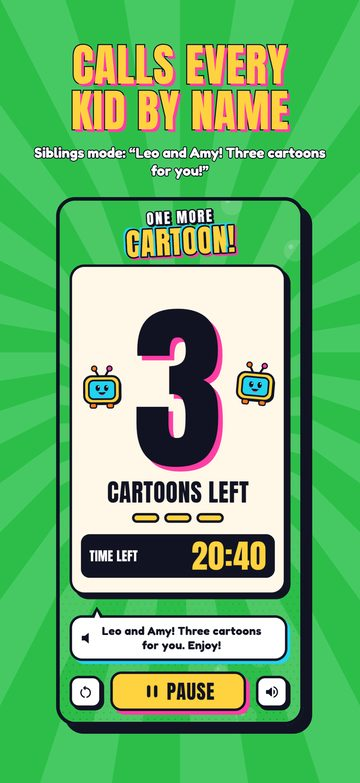
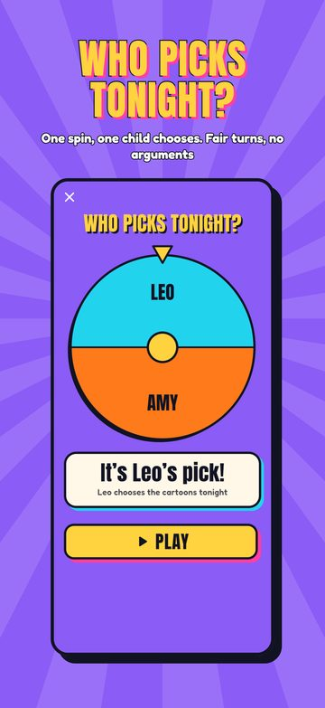

ONE MORE CARTOON!
Il conto alla rovescia simpatico che chiude i cartoni senza lacrime.
Un conto alla rovescia che i bambini capiscono davvero
“Ancora un cartone!” Ti suona familiare? One More Cartoon! trasforma la fine dei cartoni in un gioco: invece dei minuti, il bambino vede i cartoni che mancano: 3… 2… 1. Una voce allegra avvisa prima dell’ultimo e poi annuncia cosa viene dopo: bagnetto, nanna, pappa o uscire.
Novità: modalità fratelli. Un solo timer per fratelli e sorelle: la voce chiama tutti per nome e “Chi sceglie stasera?” decide a turno chi sceglie i cartoni.
Gratis per 30 giorni · poi un unico acquisto, tuo per sempre · niente abbonamento, niente pubblicità





Come funziona
- Decidete quanti cartoni. Imposta il tempo totale e la durata di ogni cartone, oppure conta solo gli episodi.
- Parte il conto alla rovescia. Un grande numero e due TV che ballano mostrano quanti cartoni mancano; la voce dice “Ancora due cartoni!” e avvisa all’ultimo.
- Si finisce con una festa. “A nanna, Sara!” Una schermata finale a fumetti rende il passaggio all’attività successiva parte del gioco, non una lite.
Perché piace ai genitori
- I bambini capiscono “ancora due cartoni” molto meglio di “ancora dieci minuti”.
- Un avviso simpatico prima della fine, così non ci sono sorprese.
- Il nome del bambino negli annunci, o i nomi di tutti con la modalità fratelli.
- Chi sceglie stasera? Un giro di ruota decide chi sceglie i cartoni, a turno e senza litigi.
- Scegli cosa viene dopo: bagnetto, nanna, pappa, uscire o uno dei 40 messaggi pronti, tutti con la stessa voce.
- 11 lingue, iPhone e iPad, verticale e orizzontale, lo schermo resta acceso.
- Niente pubblicità, niente account, nessun tracciamento: tutto resta sul tuo dispositivo.
Vuoi qualche consiglio? Leggi la nostra guida per genitori (in inglese).
Domande dei genitori
Per che età è?
Per bambini piccoli, più o meno dai 2 ai 7 anni, che non sanno ancora leggere l’orologio ma sanno contare i cartoni. Lo imposta il genitore; il bambino guarda il conto alla rovescia.
Perché contare i cartoni e non i minuti?
I bambini piccoli non hanno il senso del tempo: “ancora dieci minuti” non vuol dire niente, ma “ancora due cartoni” lo vedono e lo accettano.
Quanto costa? C’è un abbonamento?
Si scarica gratis e tutto è gratuito per 30 giorni. Poi un unico acquisto lo sblocca per sempre. Niente abbonamento e niente pubblicità.
Funziona con YouTube, Netflix o la TV?
Sì. L’app non controlla altre app né la TV: funziona accanto a quello che il bambino guarda, su un telefono o tablet appoggiato vicino.
Raccoglie dati sul mio bambino?
No. Niente account, pubblicità, statistiche o tracciamento. Impostazioni e nomi restano sul tuo dispositivo.
È disponibile su Android?
La versione Android è in test su Google Play e arriva presto.